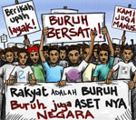

Kasus Marsinah
 Dari Dewi:
Dari Dewi:
Inilah informasi yang Dewi janjikan tentang kasus Marsinah.
Pada tanggal 3 Mei, 1993, buruh di pabrik Catur Putra Surya mogok karena perusahaan tidak menaati surat edaran yang dikeluarkan gubernur daerah itu. Surat edaran itu menghimbau agar gaji pekerja dinaikkan dari Rp 1,750 sampai Rp 2,250 sehari. Pada tanggal 4 Mei, terjadi rapat antara wakil-wakil pekerja dengan bosnya. Marsinah, seorang wanita berumur 25 tahun, adalah salah seorang dari wakil itu.
Pada pagi hari berikutnya, tigabelas wakil pekerja (tidak termasuk Marsinah) terpaksa pergi ke kantor KODIM untuk menandatangani persetujuan putus kerja. Orang-orang itu langsung mengirim surat kepada pemerintah untuk memprotes kejadian ini.
Sesudah selesai kerja sore itu, Marsinah langsung mencari temannya di kantor KODIM akan tetapi , dia diberitahu bahwa mereka sudah pulang. Dia lalu pergi ke rumah temannya untuk mendapat informasi tentang persetujuan itu. Pada jam setengah sepuluh malam, Marsinah berangkat dari rumah temannya untuk mencari makanan lalu pulang.
Tiga hari berikutnya, pada tanggal 8 Mei, jenazah Marsinah ditemukan di samping gubuk di dekat sawah 200 kilometer dari pabrik. Menurut laporan dokter, Marsinah meninggal dunia karena luka dari siksaan. Dia dipukuli dan diperkosa sebelum meninggal.
Walaupun ada penyelidikan kasus Marisinah, tidak jelas apakah anggota perusahaan atau anggota militer yang bertanggung jawab atas kematiannya. Akan tetapi Marsinah menjadi simbol atau pahlawan bagi lembaga hak asasi manusia, khususnya bagi hak buruh, di Indonesia.
Ada beberapa film, lagu, sandiwara dan puisi yang didedikasikan kepada Marsinah sejak tahun itu, termasuk monolog dramatis oleh dramawan terkenal, Ratna Sarumpaet, berjudul Marsinah Menggugat. Sandiwara itu dilarang di Indonesia selama beberapa tahun.
Komentar
 Re: Kasus Marsinah, dari IndoGuRu pada jam 07:12.
Re: Kasus Marsinah, dari IndoGuRu pada jam 07:12.
Ya, kasus ini memang menyedihkan. Sebagai latihan bahasa, bacalah artikel ini lagi, mencari:
- tanggal
- jam
- petunjuk waktu lainnya (msl. keesokan harinya).
Kemudian isilah laporan polisi yang terlampir dengan informasi yang Anda temui di artikel ini.
Check the pojok bahasa for other time indicators.
 |